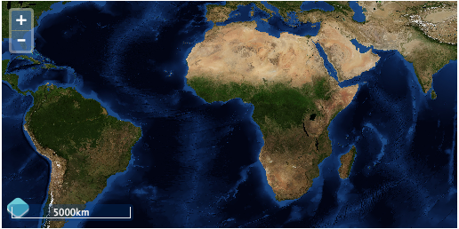

3.1. Displaying a Scale Line¶
Another typical widget to display on maps is a scale bar. OpenLayers 3 provides an ol.control.SaleLine for just this.
3.1.1. Creating a ScaleLine Control¶
Tasks
Open the map.html in your text editor.
Somewhere in the map config, add the following code to create a new scale line control for your map:
controls: ol.control.defaults().extend([ new ol.control.ScaleLine() ]),
Save your changes and open map.html in your browser: http://localhost:8080/ol_workshop/map.html
A default scale bar in the bottom left-hand corner
3.1.2. Moving the ScaleLine Control¶
You may find the scale bar a bit hard to read over the imagery. There are a few approaches to take in order to improve scale visibility. If you want to keep the control inside the map viewport, you can add some style declarations within the CSS of your document. To test this out, you can include a background color and padding to the scale bar with something like the following:
.ol-scale-line, .ol-scale-line:not([ie8andbelow]) { background: black; padding: 5px; }
However, for the sake of this exercise, let’s say you think the map viewport is getting unbearably crowded. To avoid such over-crowding, you can display the scale in a different location. To accomplish this, we need to first create an additional element in our markup and then tell the scale control to render itself within this new element.
Tasks
Create a new block level element in the <body> of your page. To make this element easy to refer to, we’ll give it an id attribute. Insert the following markup somewhere in the <body> of your map.html page. (Placing the scale element right after the map viewport element <div id="map"></div> makes sense.):
<div id="scale-line" class="scale-line"></div>
Now modify the code creating the scale control so that it refers to the scale-line element:
controls: ol.control.defaults().extend([ new ol.control.ScaleLine({className: 'ol-scale-line', target: document.getElementById('scale-line')}) ]),
Save your changes and open map.html in your browser: http://localhost:8080/ol_workshop/map.html
.scale-line { position: absolute; top: 350px; } .ol-scale-line { position: relative; bottom: 0px; left: 0px; }Now save your changes and view map.html again in your browser: http://localhost:8080/ol_workshop/map.html

A scale line control outside the map viewport.
Note
To create a custom control you can inherit (by using ol.inherits) from ol.control.Control. To see an example of this check out: http://ol3js.org/en/master/examples/custom-controls.html.